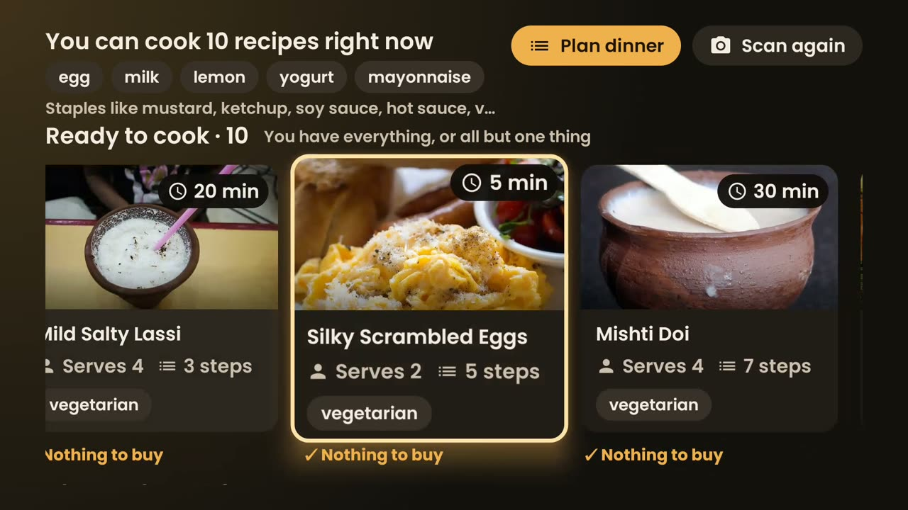
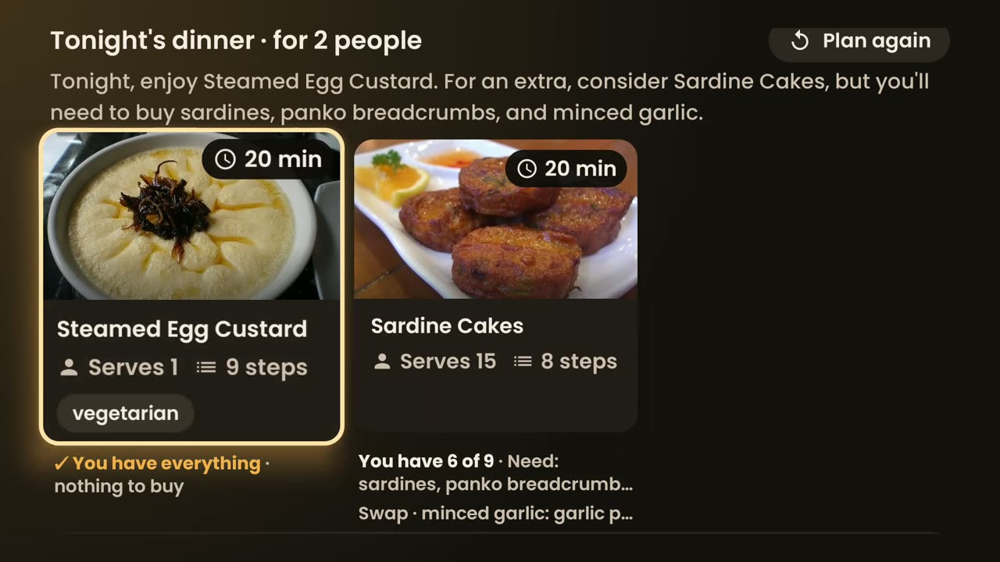
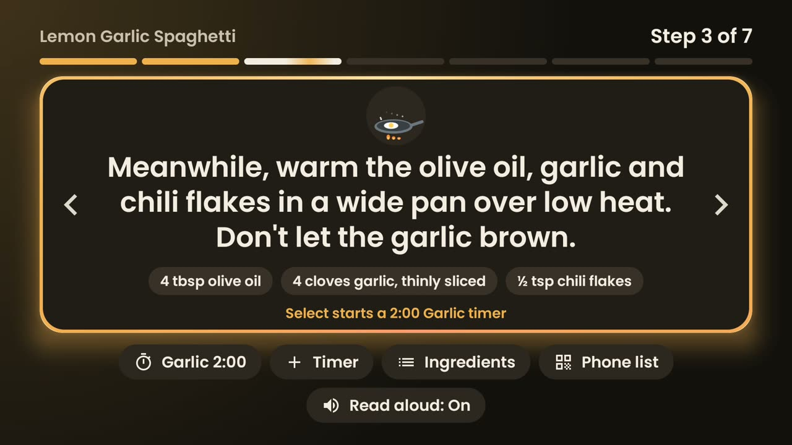
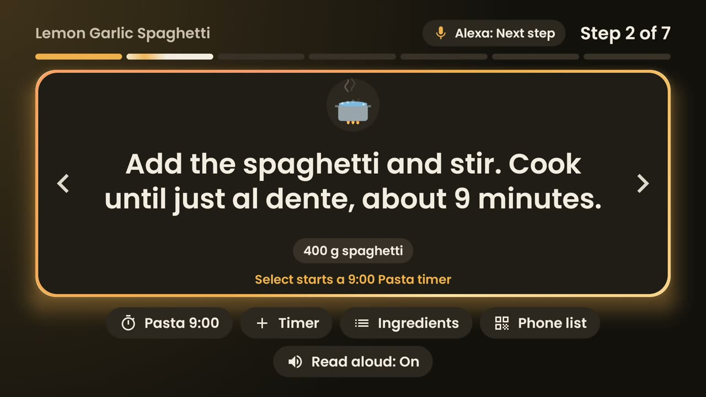
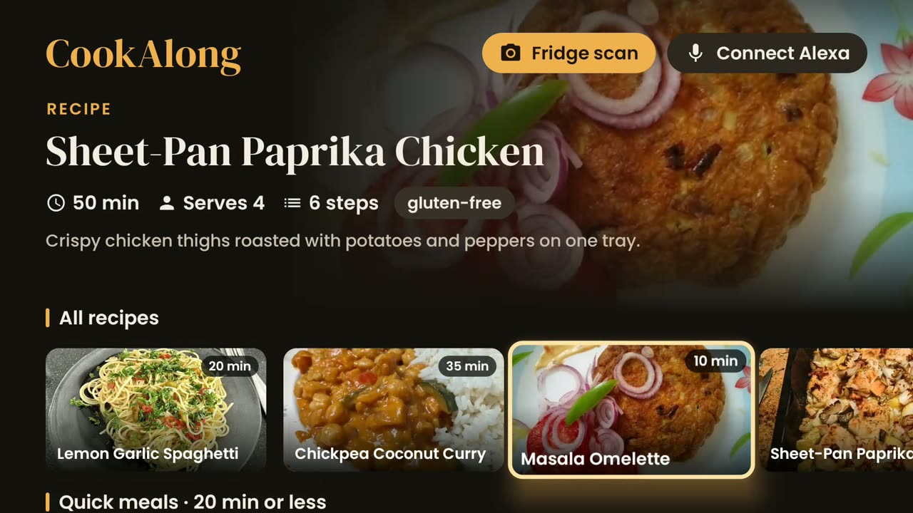

Scan the fridge
Scan the QR code on the TV and photograph your open fridge. Amazon Nova Pro on Bedrock lists what's inside in about two seconds.
Native on Amazon Fire TV
Snap your fridge with your phone. CookAlong tells you what you can cook tonight, plans the meal with an AI agent, then walks you through it hands-free with big steps, timers, read-aloud and Alexa.
477 recipes, 174 of them Indian. Dal, dosa, biryani, pad thai, paella, tiramisu, and new dishes arrive without an app update.
From fridge to fork
Most dinners start with an open fridge and no plan. CookAlong starts right there.
Scan the QR code on the TV and photograph your open fridge. Amazon Nova Pro on Bedrock lists what's inside in about two seconds.
An AI agent turns those ingredients into one to three meals, suggests swaps for what's missing, and builds the shopping list. It reads the plan aloud.
One big readable step at a time, across the room. Timers start from the step itself, with a chime when they're done.
Flour on your hands? “Alexa, next step.” Ask how much paneer you need, or what to use instead of cream.




Watch it work
Every screen in the film was recorded on a Fire TV Stick. The voices are Amazon Polly.
Everything on the biggest screen

Scale servings and every quantity follows. The catalog syncs from the cloud, so new dishes appear without an update.
Knows that capsicum is bell pepper, curd is yogurt and brinjal is aubergine.
Scan a QR code and tick items off in the shop. The list rides in the URL fragment, so nothing is uploaded.
A dropped connection never stops a recipe. Saved recipes, timers and read-aloud keep going.
Up to four at once, stored as wall-clock end times, so they stay right even after a restart.
The server verifies every recipe and quantity the agent mentions before the TV shows it. A Bedrock Guardrail blocks medical and allergy-safety advice.
Try cooking mode
Use the arrows, or your keyboard's ← →. Start a timer from a step, just like on the TV.
Read aloud
Online, every step is spoken by Amazon Polly's natural generative voice. Each sentence is fetched once and kept on the TV, and the next step is fetched ahead, so moving on is instant. If the internet drops, or the service is busy, the TV's own voice takes over mid-recipe. Nobody has to switch anything.
“Step 2. Add the spaghetti and stir. Cook until just al dente, about 9 minutes.”
The real Polly audio the TV plays.
Amazon Polly's natural voice, cached on the TV
The TV's own text-to-speech, automatically
New dishes sync from DynamoDB, no app update
Bundled and saved recipes, with a clear notice
Downloaded and cached
Cached photos, or art drawn in code
Amazon Nova reads the photo in about 2 s
Says it needs the internet; reconnects by itself
Strands agent on Nova, facts checked in DynamoDB
A clear error; pick a recipe by hand instead
Commands reach the TV in about a second
Pauses, then resumes; the remote always works
No network needed
Exactly the same
Alexa in the kitchen
Pair once with a six-digit code on the TV. After that, any Echo in the home can drive the recipe on screen: steps, timers, scaled quantities and cooking questions, answered by Nova and shown on the TV.
Under the hood
 AWS LambdaFunction URLs
AWS LambdaFunction URLs Amazon BedrockNova reads the photo
Amazon BedrockNova reads the photoOne ~4 MB APK. No Google Play services, so it runs on Fire OS, and it side-loads on Fire tablets too.
adb install -r app-release.apk